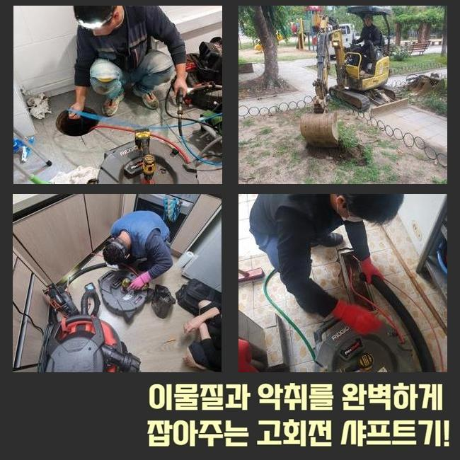
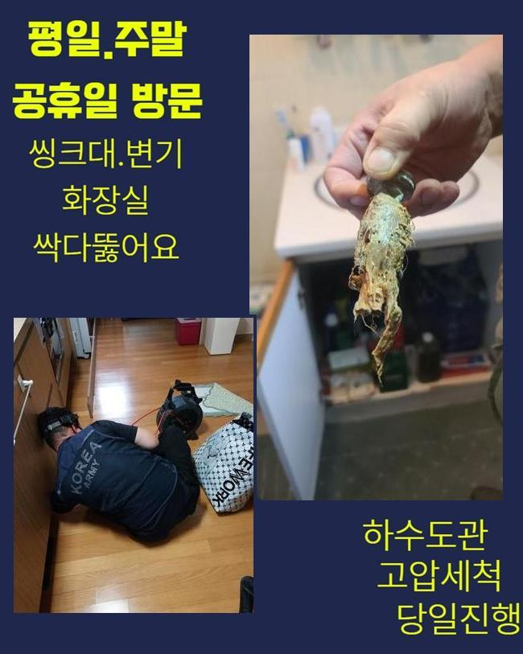
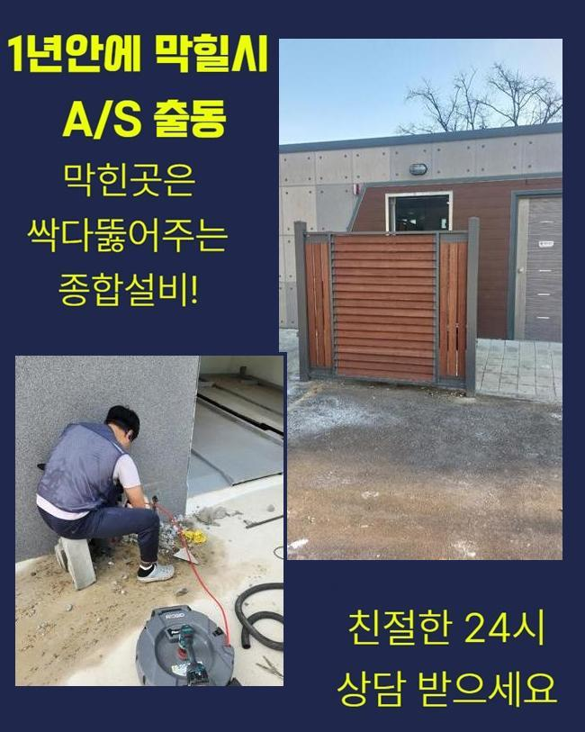
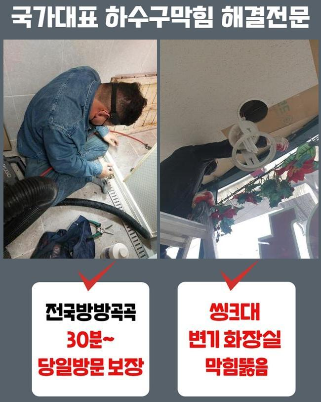
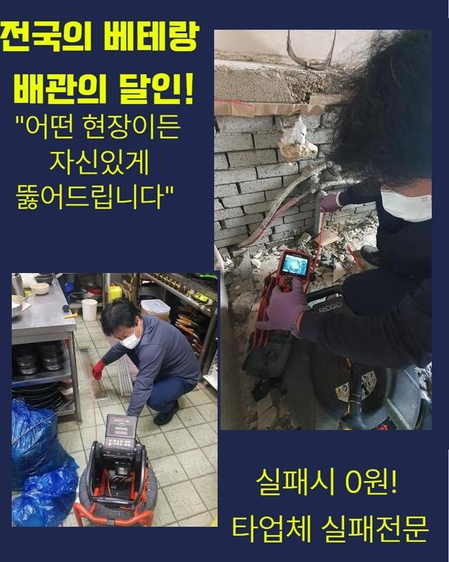

🏠 남촌동오수관뚫음 외삼미동 하수구뚫어주는곳 부속수리
용인 하수구막힘 전문 시공 후기

📋 작업 개요
- 위치: 용인
- 서비스 유형: 하수구막힘, 배관막힘, 맨홀막힘, 누수수리, 역류해결, 뚫는업체, 배관청소, 고압세척
- 작업 일시: 2025. 2. 12. 12:18
- 업체명: 하수구수사대 (010-5615-2118)
🔍 문제 상황
남촌동오수관뚫음 외삼미동 하수구뚫어주는곳 부속수리
배수구는 일반 가정집 또는 매장과 같은 장소에 꼭 필요한 시설이예요
오염된 물을 배출하여 청결하고 깔끔한 일상들을 이어나갈 수 있게하고 질병의 발생으로부터 보호합니다
이와같은 하수관이 막혀서 오수가 배출되지 않는 경우 누적된 불순물이 부패되어 지독한 악취가 생기며 화장실이나 주방에서 배수로 인한 문제점이 생기게 됩니다
이로 인해 하수가 거꾸로 올라오거나 맑은 물을 이용할 수 없게되는 상황이 생기게 되며 불편한 일들이 일어나게됩니다
아침에 하수관 역류사태로 전화를 받아서 서둘러 목적지로 출발했습니다
연립주택이라 일단 고객님의 집부터 확인하였습니다
확인해본 결과로는 집안에서 물을 쓰실때마다 부동전으로 연결된 배수관에서 하수가 넘치는 일들이 발생했어요
유독 주방쪽에서 물을 이용하실때 배수라인을 따라 풍기는 고약한 냄새까지 심각했어요

🔎 원인 분석
💡 전문가 진단: 정밀 진단 장비를 사용하여 슬러지의 고착 여부를 판명하고 타격/세척 작업을 실시했습니다.
문제의 정확한 내용을 체크하기 위해서 내시경장치를 사용해서 중심 맨홀 내부상태를 확인했습니다
머리카락과 다양한 이물질로 막혀 배수관에서 썩는듯한 악취를 나게하는 상황으로 집안쪽으로 오하수가 범람하는 현상까지 일어날 수도 있으므로 신속하게 수리에 들어갔습니다
중심관의 역할부터 안내 해드릴게요
중심관의는 일상적으로 하는 모든 생활에서 배출되는 오염수를 내보내는 역할을 하는 설비장치입니다
메인 배관이 막히게되면 배관 안에서부터 넘친 물과 이물질이 누적되며 부동전쪽에서 역류해버리는 사태가 발생하는 경우가 많습니다
이럴때는 내부쪽에서 배관만 수리한다고 해도 원인을 처리하는게 쉽지 않으므로 메인이 되는 중심관을 처리하셔야 모든 수도의 이용이 정상적으로 가능합니다
보통 집 안에서 생기는 문제들은 어렵지 않게 해결하실 수도 있지만 관경이 넓은 본관은 고압세척장치를 써서 단단하게 변형된 불순물을 스케일링 할수있어요
고압세척장치의 노즐라인은 배수관의 구석진 부분까지 전부 커버 할 수 있으므로 신속하고도 정확하게 청소가 가능해요
메인 배관에 고압세척기를 이용하여 음식에서 나온 찌꺼기들과 불순물을 제거했어요
이후에 내시경장비를 활용하여 물이 잘 순환되는지 재확인 하였습니다

🔧 작업 과정
의뢰인께서 모니터를 직접 보시면서 하수관이 완전히 세척된 것까지 한번 보시고나서야 마무리까지 부탁 하셨어요
다음 현장에 출동하여 동일하게 막힌 배수구를 수리했어요
둘러본 현장 또한 욕실과 베란다쪽에서 물과 찌꺼기가 넘치는 일이 반복되며 이물질이 섞여 올라와서 지독한 냄새까지 풍기고 있는 상황으로 매우 심각했습니다
이러한 경우에는 세탁실의 배관쪽에서 배수관 세정을 진행하는게 일반적인 경우지만 이번엔 작업과정이 어려운 P트랩으로 난관에 봉착했어요
P트랩의 경우에 벌레유입을 막는 것에는 유리하겠지만 모양상 이물질들이 쌓여서 배수관의 막힘사고를 일으키는 이유가 될 수 있습니다
P트랩이 설치된 현장은 고압세척기 이용이 불가능한 상황들이 많아요
노즐선을 투입할 수 없으므로 고객께 더이상의 금액을 부담시키지 않기 위해서 합리적인 작업을 선택해야만 했어요
P트랩의 배관 특성상 고압세척기기를 활용하면 하수라인에 피해를 줄 수도 있기때문에 샤프트기기를 사용하여 작업을 진행했습니다
샤프트장치는 회전하는 힘으로 배수관에 쌓여있는 불순물을 제거하는 기기입니다
샤프트기는 배수관을 긁거나 피해주지 않으면서 깊숙한 곳에 투입될 수 있어요
장비의 끝쪽에 비질을 하는 듯한 솔을 결합하고 찌꺼기를 세척할 수 있기때문에 구부러진 부위까지 쉽게 투입돼서 배수관 안쪽에 누적된 침전물도 완전하게 제거합니다
몇 번의 작업만으로는 완벽하게 제거할 수 없었으므로 샤프트장비를 계속해서 이용하여 딱딱하게 변형된 찌꺼기를 세척했습니다
하수구 세척이 끝난 후에 배수의 흐름이 정상적으로 흐르고있는지 점검을 완료했고 고객님도 문제의 배수구를 직접 보시고나서야 만족하신다고 하셨어요
배수구가 막힌 경우에 원인을 제거하지 않고 계속 사용하신다면 하수라인 내부에 누적 되어있는 노폐물이 썩게되면서 고약한 냄새가 생겨나게되며 통수가 정상적으로 이루어지지 않으므로 오수가 거꾸로 올라오는 사태가 발생할 수 있습니다
하수관 내부에서 압력이 지속적으로 발생하게 되면 하수관이 손상되어 누수와 같은 상황으로 발전되며 고객님의 비용적인 부담감 상승과 많은 시간까지 들여야합니다


✅ 작업 완료
배수구와 관련된 문제점이 생겼다면 전문진에게 도움을 요청하셔서 신속하게 대비책을 취하는게 중요해요
이번 현장에선 하수관 역류사고를 해결했고 배수구 악취 세척까지 완벽하게 마무리했습니다
사례자님의 생활 속 습관등을 주의하셔야 한다고 알려드리고 하수관 문제들도 재발하는 경우가 없게끔 확실하게 체크했습니다
배수구 문제점이 발견되신 경우에 편안하게 저희 전문진에게 전화 해주시면 바로 처리 해드리겠습니다



⚠️ 베란다 누수 및 방수 관리 방법
- ✅ 비가 많이 올 때 창틀 주변이나 아래층 천장에 얼룩이 생기는지 정기적으로 확인해 보세요.
- ✅ 우수관 주변 실리콘 마감이 들뜨거나 깨진 틈새가 있는지 손상 여부를 수시로 체크하세요.
- ✅ 베란다 바닥 타일의 줄눈(메지)이 소실되면 그 틈으로 물이 침투하여 누수가 유발됩니다.
- ✅ 누수 의심 증상 발견 시 방치하면 아래층 손실이 커지므로 즉시 전문가의 진단을 받으십시오.
💡 핵심 정리
- 확실한 장비 작업(내시경 점검 및 샤프트 스케일링)으로 원인을 뿌리 뽑습니다.
- 작업 후 1년 이내에 동일한 부위 재발 시 100% 무상 A/S 서비스를 보장합니다.
- 서울 · 경기 · 인천 전 지역에 24시간 언제든 긴급 출동할 수 있도록 항시 대기 중입니다.
❓ 자주 묻는 질문 (FAQ)
🚨 용인 하수구막힘 문제로 고민이신가요?
정확한 원인 진단과 확실한 시공으로 재발 없는 해결을 약속드립니다.
24시간 긴급 출동 | 서울 · 경기 · 인천 전지역 | 1년 내 재발 시 무상 A/S